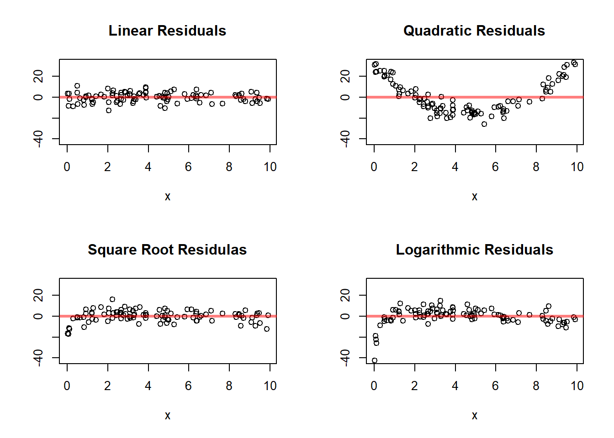
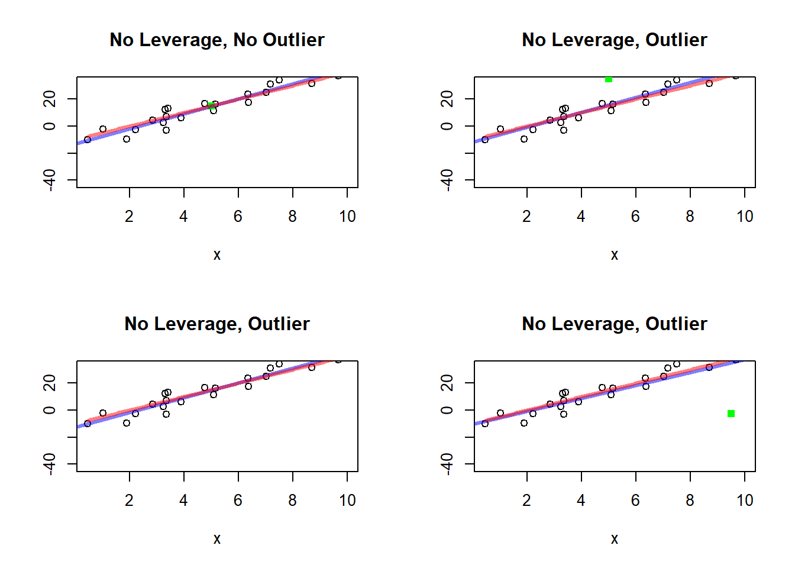

12 Simple Linear Regression
12.1 Scatterplots and First Impressions
A regression analysis should begin with a graph.
Before fitting a line, computing a correlation, or carrying out a hypothesis test, we should look at the data directly. This is especially important in regression because the numerical summaries can be misleading when the relationship is curved, when there are outliers, or when the data contain separate groups.
A scatterplot is the natural starting point because it shows the pairwise relationship between the explanatory variable and the response variable in its rawest form.
12.1.1 Scatterplot
A scatterplot displays each observational unit as a point with coordinates \((x,y)\).
In the study-time example, each point represents one student:
- the horizontal coordinate gives the number of hours studied
- the vertical coordinate gives the exam score
So the scatterplot shows the full collection of paired observations at once.
This is important because regression is about a relationship between two variables, not about either variable in isolation. A histogram of study time and a histogram of exam scores would each describe one variable, but neither would reveal how the two variables move together. The scatterplot does.
A scatterplot is also useful because it lets us see whether a simple linear regression model is even plausible before we begin formal modeling.
12.1.2 What to Look For
A scatterplot helps answer several basic questions.
- Is the relationship roughly increasing or decreasing?
- Does a straight line seem reasonable?
- Are there outliers?
- Is the spread of the points roughly constant?
- Are there separate groups that should not be combined?
These questions are not minor details. They determine whether simple linear regression is an appropriate model.
For example, if the points show a roughly increasing straight-line pattern, then a positive linear model may be reasonable. If the relationship is clearly curved, then a straight line may be too simple. If the points spread out more and more as \(x\) increases, then the constant-variance assumption may be questionable. If there are distinct clusters, then one fitted line for all observations may hide important structure.
So the scatterplot is already doing statistical work. It is not just an illustration.
12.1.3 Why the Graph Comes First
A numerical summary alone can hide important structure.
Two data sets can have similar correlations and similar fitted lines but very different scatterplots. One may show a clean linear trend, while another may show curvature, clustering, or a single influential observation.
This is one of the most important practical lessons in regression:
A fitted line should never be interpreted without first looking at the scatterplot.
The graph is the first diagnostic tool because it tells us whether the basic form of the model is even sensible.
# Scatter Plots Patterns
# Simulation Parameters
n <- 100
s2 <- 20
# Simulates the Explanatory Variable
x <- runif(n = n, min = 0, max = 10)
# Linear relationship
aLin <- -10
bLin <- 5
fLin <- function(x){aLin + bLin * x}
yLin <- fLin(x) + rnorm(n = n, sd = sqrt(s2))
# Quadratic Relationship
aQua <- 1
bQua <- -20
cQua <- 2
fQua <- function(x){aQua + bQua * x + cQua * x^2}
yQua <- fQua(x) + rnorm(n = n, sd = sqrt(s2))
# Square Root Relationship
aSqr <- -30
bSqr <- 20
fSqr <- function(x){aSqr + bSqr * sqrt(x)}
ySqr <- fSqr(x) + rnorm(n = n, sd = sqrt(s2))
# Logarithm Relationship
aLog <- -5
bLog <- 10
fLog <- function(x){aLog + bLog * log(x)}
yLog <- fLog(x) + rnorm(n = n, sd = sqrt(s2))
# Plots the Relationships
par(mfrow = c(2, 2))
ymax <- max(yLin, yQua, yLog, ySqr)
ymin <- min(yLin, yQua, yLog, ySqr)
# linear Relationship
plot(x = x,
y = yLin,
ylim = c(ymin, ymax),
ylab = "",
main = "Linear Relationship")
curve(fLin,
add = TRUE,
col = rgb(1, 0, 0, 0.5),
lwd = 3)
# Quadratic Relationship
plot(x = x,
y = yQua,
ylim = c(ymin, ymax),
ylab = "",
main = "Quadratic Relationship")
curve(fQua,
add = TRUE,
col = rgb(1, 0, 0, 0.5),
lwd = 3)
# Square Root Relationship
plot(x = x,
y = ySqr,
ylim = c(ymin, ymax),
ylab = "",
main = "Square Root Relationship")
curve(fSqr,
add = TRUE,
col = rgb(1, 0, 0, 0.5),
lwd = 3)
# Logarithmic Relationship
plot(x = x,
y = yLog,
ylim = c(ymin, ymax),
ylab = "",
main = "Logarithmic Relationship")
curve(fLog,
add = TRUE,
col = rgb(1, 0, 0, 0.5),
lwd = 3)
This simulation is useful because it shows several relationships that may all look increasing, but are not equally well described by a straight line.
The first panel shows a truly linear relationship. The remaining panels show nonlinear relationships. This illustrates why a scatterplot must come before fitting a simple linear model. A line may look reasonable in some settings and inadequate in others.
So the main lesson is:
Not every relationship between two quantitative variables is linear, even when the variables are clearly associated.
12.2 The Simple Linear Regression Model
12.2.1 The Population Regression Line
Simple linear regression models the mean response as a linear function of the explanatory variable:
\[ E(y \mid x) = \beta_0 + \beta_1 x \]
where:
\(\beta_0\) is the intercept
\(\beta_1\) is the slope
This equation is called the population regression line.
It is important to interpret this correctly. The equation does not say that every observed response lies exactly on a line. Instead, it says that the mean response at a given value of \(x\) lies on a line.
So the regression model is a model for the conditional mean of the response, not a perfect deterministic rule for individual observations.
This is one of the central conceptual ideas of regression.
12.2.2 Interpretation of the Intercept
The intercept \(\beta_0\) is the mean value of \(y\) when \(x=0\).
Its practical meaning depends on the setting.
In some applications, \(x=0\) is meaningful and lies within the range of the data. In that case, the intercept has a direct interpretation.
For example, if \(x\) is hours studied, then \(\beta_0\) is the mean exam score for students who studied zero hours.
But in other applications, \(x=0\) may not be realistic or may lie far outside the observed range. Then the intercept still exists mathematically, but its practical meaning may be weak.
Students should therefore learn an important habit:
Always ask whether \(x=0\) makes sense in the context of the problem before interpreting the intercept too strongly.
12.2.3 Interpretation of the Slope
The slope \(\beta_1\) describes how the mean response changes when \(x\) increases by one unit.
In the study-time example, \(\beta_1\) is the change in mean exam score associated with one additional hour of study.
If \(\beta_1 > 0\), the relationship is increasing.
If \(\beta_1 < 0\), the relationship is decreasing.
If \(\beta_1 = 0\), there is no linear relationship in the mean response.
The slope is usually the most important parameter in simple linear regression because it describes the direction and rate of change of the mean response.
It is often the main inferential target in the chapter because it tells us whether the explanatory variable is useful for describing or predicting the response.
12.2.4 Adding Random Error
Individual observations will not lie exactly on the line. A more complete model is
\[ y_i = \beta_0 + \beta_1 x_i + e_i \]
where \(e_i\) represents the deviation of the observed response from the mean response at \(x_i\).
This form says that each observation is made of two parts:
a systematic part, \(\beta_0 + \beta_1 x_i\)
a random part, \(e_i\)
The systematic part describes the average pattern across values of \(x\).
The random part represents the variation that remains around that average pattern.
This random deviation is essential. It acknowledges that even when the explanatory variable is known, the response is still not perfectly predictable.
12.2.5 Assumptions
For the usual simple linear regression model, we assume:
the mean response is linear in \(x\)
the errors have mean 0
the errors have common variance \(\sigma^2\)
the errors are independent
for inference, the errors are often assumed to be approximately normal
These assumptions should be understood intuitively.
The linearity assumption says that a straight line is a reasonable description of the mean response.
The mean-zero error assumption says that the regression line is correctly centered: observations are as likely to fall above the line as below it.
The constant-variance assumption says that the spread around the line is about the same across the range of \(x\).
The independence assumption says that the errors for different observations do not systematically move together.
The normality assumption is mainly used for formal inference, such as confidence intervals and hypothesis tests for the slope and intercept.
These assumptions are not guaranteed by fitting a line. They are assumptions that must be checked and judged from the data and the study context.
12.3 Why a Line?
A straight line is the simplest way to describe a changing average response.
It will not be appropriate in every setting, but it is often a useful first approximation.
A linear model is especially attractive because:
it is easy to interpret
it summarizes the direction of the relationship
it provides a clear measure of rate of change through the slope
it supports estimation, testing, and prediction
The simplicity of the line is one of its strengths. Even when the true relationship is not perfectly linear, a line may still provide a useful summary over the observed range.
Students should understand that fitting a line does not mean the true relationship is exactly linear. It means that a line is being used as a model that may capture the main pattern in the data well enough to be useful.
So the question is not whether the world is exactly linear. The question is whether a linear model is an adequate and interpretable approximation for the data at hand.
12.4 Estimating the Regression Line
The population parameters \(\beta_0\) and \(\beta_1\) are unknown, so they must be estimated from the sample.
12.4.1 The Estimated Regression Line
The sample regression line is
\[ \hat{y} = b_0 + b_1 x \]
where:
\(b_0\) estimates \(\beta_0\)
\(b_1\) estimates \(\beta_1\)
This line is often called the fitted regression line.
It is the line produced from the sample data and is used to describe the estimated mean response at different values of \(x\).
12.4.2 Least Squares Idea
The most common method for estimating the line is least squares.
For each observation, the residual is
\[ e_i = y_i - \hat{y}_i \]
where \(\hat{y}_i\) is the predicted value from the line.
Least squares chooses the line that makes the sum of squared residuals as small as possible:
\[ \sum (y_i - \hat{y}_i)^2. \]
So among all possible lines, the least squares line is the one that fits the observed data most closely in the sense of minimizing total squared vertical error.
This provides a very clear optimization principle for fitting the line.
12.4.3 Why Squared Residuals?
Squaring does two things:
it prevents positive and negative residuals from canceling
it penalizes large deviations more heavily than small deviations
The first point is necessary because otherwise a point above the line and a point below the line could offset each other, making the total error appear smaller than it really is.
The second point is useful because large deviations matter more for fit than small ones. Squaring gives those large deviations greater weight.
This is why least squares is both mathematically convenient and practically meaningful.
12.4.4 Interpreting the Fitted Line
The fitted line summarizes the average trend in the data.
It should not be interpreted as saying every observation follows the line exactly. Rather, it gives the predicted mean response at each value of \(x\).
So if the fitted line predicts an exam score of 78 for students who study 4 hours, that should be interpreted as the estimated mean score for students at that study-time level, not as the exact score every such student will receive.
This distinction between a mean response and an individual response is fundamental and will become especially important later when discussing prediction intervals.
12.5 Residuals
Residuals are central to understanding regression.
12.5.1 Definition
The residual for the \(i\)th observation is
\[ e_i = y_i - \hat{y}_i \]
It measures how far the observed point is above or below the fitted line.
The residual is therefore the vertical discrepancy between what we observed and what the fitted model predicted for that value of \(x\).
12.5.2 Interpretation
A positive residual means the observed value is above the line.
A negative residual means the observed value is below the line.
A residual near 0 means the fitted line predicts that observation well.
Residuals provide case-by-case information about model fit. They show where the line fits well and where it fits poorly.
12.5.3 Why Residuals Matter
Residuals help assess:
whether the linear model is appropriate
whether variability is roughly constant
whether unusual observations are present
Residuals are not just leftover noise. They are one of the main tools for checking the adequacy of the model.
In a good regression fit, the residuals should behave like unsystematic random variation around 0. If the residuals display structure, such as a curve or a fan shape, then the fitted line may be missing something important.
# Residual Plots Patterns
# Simulation Parameters
n <- 100
s2 <- 20
# Simulates the Explanatory Variable
x <- runif(n = n, min = 0, max = 10)
# Linear relationship
aLin <- -10
bLin <- 5
fLin <- function(x){aLin + bLin * x}
yLin <- fLin(x) + rnorm(n = n, sd = sqrt(s2))
fitLin <- lm(yLin ~ x)
resLin <- fitLin$residuals
# Quadratic Relationship
aQua <- 1
bQua <- -20
cQua <- 2
fQua <- function(x){aQua + bQua * x + cQua * x^2}
yQua <- fQua(x) + rnorm(n = n, sd = sqrt(s2))
fitQua <- lm(yQua ~ x)
resQua <- fitQua$residuals
# Square Root Relationship
aSqr <- -30
bSqr <- 20
fSqr <- function(x){aSqr + bSqr * sqrt(x)}
ySqr <- fSqr(x) + rnorm(n = n, sd = sqrt(s2))
fitSqr <- lm(ySqr ~ x)
resSqr <- fitSqr$residuals
# Logarithm Relationship
aLog <- -5
bLog <- 10
fLog <- function(x){aLog + bLog * log(x)}
yLog <- fLog(x) + rnorm(n = n, sd = sqrt(s2))
fitLog <- lm(yLog ~ x)
resLog <- fitLog$residuals
# Plots the Relationships
par(mfrow = c(2, 2))
ymax <- max(resLin, resQua, resLog, resSqr)
ymin <- min(resLin, resQua, resLog, resSqr)
# linear Relationship
plot(x = x,
y = resLin,
ylim = c(ymin, ymax),
ylab = "",
main = "Linear Residuals")
abline(h = 0, col = rgb(1, 0, 0, 0.5), lwd = 3)
# Quadratic Relationship
plot(x = x,
y = resQua,
ylim = c(ymin, ymax),
ylab = "",
main = "Quadratic Residuals")
abline(h = 0, col = rgb(1, 0, 0, 0.5), lwd = 3)
# Square Root Relationship
plot(x = x,
y = resSqr,
ylim = c(ymin, ymax),
ylab = "",
main = "Square Root Residulas")
abline(h = 0, col = rgb(1, 0, 0, 0.5), lwd = 3)
# Logarithmic Relationship
plot(x = x,
y = resLog,
ylim = c(ymin, ymax),
ylab = "",
main = "Logarithmic Residuals")
abline(h = 0, col = rgb(1, 0, 0, 0.5), lwd = 3)
These residual plots reinforce an important lesson.
When the mean relationship is truly linear, the residuals should fluctuate around 0 without a clear pattern. When the relationship is nonlinear, the residual plots often reveal systematic structure. That is why residual analysis is such an important part of regression.
12.6 Estimating the Variability Around the Line
In addition to estimating the line itself, we need a measure of how much the data vary around that line.
12.6.1 Residual Standard Deviation
A common measure is the residual standard deviation, often denoted by \(s_e\).
It summarizes the typical size of the residuals.
So while the fitted line describes the average pattern, the residual standard deviation describes how much individual observations vary around that pattern.
12.6.2 Interpretation
If \(s_e\) is small, the points tend to lie close to the line.
If \(s_e\) is large, the points are widely scattered around the line.
In the study-time example, a small residual standard deviation would mean that study time is a strong predictor of exam score. A large residual standard deviation would mean that many other factors are influencing performance.
So \(s_e\) measures the typical prediction error from the line, expressed in the same units as the response variable.
12.6.3 Why Its Size Must Be Interpreted Relative to the Overall Variability
The size of the residual standard deviation should not be interpreted in isolation.
A value may seem small or large depending on the overall scale and variability of the response variable.
For example, suppose the residual standard deviation is 5.
If the response variable itself varies only a little, then a residual standard deviation of 5 may be quite large.
If the response variable varies over a very wide range, then a residual standard deviation of 5 may be fairly small.
So the residual standard deviation should be interpreted relative to the total variability in the response variable.
This is an important point.
The residual standard deviation tells us how much variation is left unexplained by the regression line, but to judge whether that is a lot or a little, we should compare it to how much variation was present in the response variable to begin with.
If the residual standard deviation is much smaller than the overall standard deviation of \(y\), then the regression model is explaining an important part of the variation in the response.
If the residual standard deviation is nearly as large as the overall standard deviation of \(y\), then the regression line is not reducing the variability very much, so the linear relationship is not especially helpful for prediction.
So, conceptually:
the overall standard deviation of \(y\) measures total variability in the response
the residual standard deviation measures the variability left after fitting the line
This comparison helps us understand how useful the regression model really is.
12.7 Leverage
In regression, not all observations play the same role in determining the fitted line.
Some observations have explanatory-variable values that are near the center of the data, while others are far from the center. Observations that are far from the bulk of the \(x\) values have greater potential to affect the fitted regression line.
This idea is called leverage.
12.7.1 Basic Idea
Leverage measures how unusual an observation is with respect to its explanatory-variable value.
An observation has high leverage if its \(x\) value is far from the mean of the explanatory variable.
An observation has low leverage if its \(x\) value is close to the center of the observed \(x\) values.
So leverage is about the position of a point in the horizontal direction, not the vertical direction.
This is important.
A point can have:
high leverage because its \(x\) value is extreme
a large residual because its \(y\) value is far from the fitted line
both
or neither
These are different ideas.
12.7.2 Why Leverage Matters
Points with high leverage have greater potential to pull the regression line toward themselves.
This happens because when a point is far out in the \(x\) direction, changing its fitted value can change the slope of the line more than a point near the center of the data.
Intuitively, points near the middle of the \(x\) values do not have much ability to tilt the line.
Points far to the left or far to the right can have much more influence on the slope.
So leverage helps identify observations that are in a position to strongly affect the fitted model.
However, leverage by itself is not necessarily a problem.
A point with high leverage is not automatically bad or unusual in a harmful sense. It may simply represent a legitimate observation at an extreme but important value of the explanatory variable.
The concern arises when a point has both:
high leverage
and a large residual
Such a point may have substantial influence on the fitted line.
12.7.3 Leverage Is About \(x\), Not About \(y\)
This is one of the most important conceptual points.
Leverage depends on the explanatory-variable values, not on the response values.
So if two observations have the same \(x\) value, they have the same leverage, even if one has a much larger residual than the other.
Thus:
leverage measures how far an observation is in the horizontal direction
the residual measures how far an observation is in the vertical direction
These two ideas work together, but they are not the same.
12.7.4 Formal Definition
In simple linear regression, the leverage of observation \(i\) is often denoted by
\[ h_{ii}. \]
Its formula is
$$
h_{ii}
- .
$$
This formula shows directly that leverage increases as \(x_i\) moves farther away from \(\bar{x}\).
The first term,
\[ \frac{1}{n}, \]
is present for every observation.
The second term becomes larger when the observation is farther from the mean of the explanatory variable.
So observations near \(\bar{x}\) tend to have smaller leverage, while observations far from \(\bar{x}\) tend to have larger leverage.
12.7.5 Interpretation of the Formula
The leverage formula reflects two ideas:
First, every observation contributes something to the regression fit, so every observation has some leverage.
Second, observations that are far from the center of the \(x\) values contribute more strongly to determining the slope.
That is why the squared distance
\[ (x_i-\bar{x})^2 \]
appears in the formula.
The farther the \(x\) value is from the mean, the larger this term becomes, and the larger the leverage becomes.
So leverage is fundamentally a measure of how much “opportunity” a point has to affect the fitted line because of where it sits in the explanatory-variable space.
12.7.6 High and Low Leverage Points
A low-leverage point has an \(x\) value near the center of the data.
A high-leverage point has an \(x\) value far from the center of the data.
High-leverage points often occur near the edges of the observed range of \(x\), especially if one point is much farther out than the others.
These points deserve attention because they can strongly affect the fitted slope and fitted values.
A common practical guideline is to compare leverage values to the average leverage.
In simple linear regression with an intercept, the average leverage is
\[ \frac{2}{n}. \]
So observations with leverage substantially larger than
\[ \frac{2}{n} \]
may be considered relatively high-leverage points.
This is not a strict rule, but it is a useful diagnostic guideline.
12.7.7 Leverage versus Influence
Leverage and influence are related, but they are not the same.
A point with high leverage has the potential to influence the fitted line.
But whether it actually has strong influence depends also on whether its response value is consistent with the general pattern of the data.
For example:
A point may have high leverage and lie close to the fitted trend. Then it may help anchor the line without causing problems.
A point may have high leverage and also lie far from the trend. Then it may substantially distort the fit.
So leverage alone does not tell the whole story. It tells us which points are in a position to matter.
Influence is about whether they actually do matter.
12.7.8 Graphical Intuition
A useful way to picture leverage is through a scatterplot.
# Leverage Plots
# Simulation Parameters
n <- 25
s2 <- 20
# Simulates the Explanatory Variable
x <- runif(n = n, min = 0, max = 10)
# Linear relationship
aLin <- -10
bLin <- 5
fLin <- function(x){aLin + bLin * x}
yLin <- fLin(x) + rnorm(n = n, sd = sqrt(s2))
# No Leverage, No Influence
x1 <- 5
y1 <- fLin(x1)
lm1 <- lm(c(yLin, y1) ~ c(x, x1))
# No Leverage, Some Influence
x2 <- 5
y2 <- fLin(x2) + 20
lm2 <- lm(c(yLin, y2) ~ c(x, x2))
# Leverage, No Influence
x3 <- 10
y3 <- fLin(x3)
lm3 <- lm(c(yLin, y3) ~ c(x, x3))
# Leverage, High Influence
x4 <- 9.5
y4 <- fLin(x4) - 40
lm4 <- lm(c(yLin, y4) ~ c(x, x4))
par(mfrow = c(2, 2))
# No Influence No Outlier
plot(x = x,
y = yLin,
ylim = c(ymin, ymax),
ylab = "",
main = "No Leverage, No Outlier")
points(x = x1,
y = y1,
col = rgb(0, 1, 0, 1),
pch = 15)
abline(a = lm1$coefficients[1],
b = lm1$coefficients[2],
col = rgb(0, 0, 1, 0.5),
lwd = 3)
curve(fLin,
add = TRUE,
col = rgb(1, 0, 0, 0.5),
lwd = 3)
# No Influence Outlier
plot(x = x,
y = yLin,
ylim = c(ymin, ymax),
ylab = "",
main = "No Leverage, Outlier")
points(x = x2,
y = y2,
col = rgb(0, 1, 0, 1),
pch = 15)
abline(a = lm2$coefficients[1],
b = lm2$coefficients[2],
col = rgb(0, 0, 1, 0.5),
lwd = 3)
curve(fLin,
add = TRUE,
col = rgb(1, 0, 0, 0.5),
lwd = 3)
# Influence No Outlier
plot(x = x,
y = yLin,
ylim = c(ymin, ymax),
ylab = "",
main = "No Leverage, Outlier")
points(x = x3,
y = y3,
col = rgb(0, 1, 0, 1),
pch = 15)
abline(a = lm3$coefficients[1],
b = lm3$coefficients[2],
col = rgb(0, 0, 1, 0.5),
lwd = 3)
curve(fLin,
add = TRUE,
col = rgb(1, 0, 0, 0.5),
lwd = 3)
# Influence Outlier
plot(x = x,
y = yLin,
ylim = c(ymin, ymax),
ylab = "",
main = "No Leverage, Outlier")
points(x = x4,
y = y4,
col = rgb(0, 1, 0, 1),
pch = 15)
abline(a = lm4$coefficients[1],
b = lm4$coefficients[2],
col = rgb(0, 0, 1, 0.5),
lwd = 3)
curve(fLin,
add = TRUE,
col = rgb(1, 0, 0, 0.5),
lwd = 3)
These plots are valuable because they separate several ideas that students often confuse:
a point can be unusual in the \(x\) direction
a point can be unusual in the \(y\) direction
a point can actually change the fitted line a great deal
The plots make clear that leverage is about location in the \(x\) direction, whereas influence depends on both leverage and agreement with the general trend.
12.7.9 Why Leverage Is Useful
Leverage is useful because it helps us identify observations that deserve closer examination.
In regression analysis, we often ask:
Are there observations with unusual \(x\) values?
Could these points strongly affect the fitted line?
Are these points legitimate data values, or do they reflect recording problems or an unusual subgroup?
Leverage helps answer these questions.
It is especially important in applied work because a fitted regression line can sometimes depend heavily on just one or two observations with extreme explanatory-variable values.
Recognizing such points is part of good model checking.
12.7.10 Summary
Leverage measures how unusual an observation is with respect to its explanatory-variable value.
It is a horizontal concept:
observations far from \(\bar{x}\) have higher leverage
observations near \(\bar{x}\) have lower leverage
In simple linear regression, leverage is given by
$$
h_{ii}
- .
$$
High leverage means that a point has greater potential to affect the fitted regression line, especially the slope.
But leverage alone does not imply that a point is problematic. It becomes especially important when combined with a large residual, since then the point may have strong influence on the fit.
So leverage is one of the main diagnostic ideas used to understand how individual observations affect a regression model.
12.8 Inference About the Regression Parameters
The inferential part of the chapter extends the same general logic used earlier in the course: estimate an unknown population parameter, quantify uncertainty, and test hypotheses. What changes here is that the parameters now describe a relationship rather than a single population characteristic. The reference textbook organizes this part of the chapter around the regression parameters, especially the slope, which is usually the main object of scientific interest.
12.8.1 Inference About the Slope
The slope is usually the most important parameter.
A common question is whether the explanatory variable is useful in predicting the response.
This leads to the hypotheses
\[ H_0:\beta_1 = 0 \]
versus
\[ H_a:\beta_1 \ne 0 \]
or, in one-sided form,
\[ H_a:\beta_1 > 0 \quad \text{or} \quad H_a:\beta_1 < 0. \]
The null hypothesis \(\beta_1=0\) says that the mean response does not change linearly with \(x\). In that case, the regression line is flat, and the explanatory variable provides no linear predictive information about the mean response.
The alternative says that the mean response does change with \(x\).
This is one of the most important regression tests because it addresses the basic question of whether the explanatory variable contributes to explaining the response.
12.8.2 Interpretation of the Hypotheses
If \(\beta_1 = 0\), the mean response does not change linearly with \(x\).
If \(\beta_1 \ne 0\), there is evidence of a linear relationship between the explanatory and response variables.
Notice that this is a statement about the mean response, not about every individual response. Even if the slope is significantly different from 0, there may still be substantial variability around the line.
So a significant slope means that there is evidence of a non-flat average relationship, not that prediction is perfect.
12.8.3 Test Statistic for the Slope
The test statistic has the familiar form
\[ t = \frac{b_1 - 0}{SE(b_1)} \]
with appropriate degrees of freedom.
More generally, to test
\[ H_0:\beta_1=\beta_{1,0}, \]
the statistic is
\[ t=\frac{b_1-\beta_{1,0}}{SE(b_1)}. \]
This parallels the one-sample and two-sample tests introduced earlier in the course. The new feature is that the parameter is now a slope rather than a mean or proportion.
The statistic measures how many estimated standard errors the observed slope lies from the null value. If that number is large in magnitude, the data provide evidence against the null hypothesis.
12.8.4 Confidence Interval for the Slope
A confidence interval for \(\beta_1\) gives a range of plausible values for the true rate of change in the mean response.
This interval is often more informative than the hypothesis test because it provides both direction and magnitude.
If the confidence interval contains 0, then the null hypothesis of no linear relationship remains plausible.
If the interval does not contain 0, then the data provide evidence of a linear relationship.
But the interval also tells us more than that: it tells us how strong the slope may plausibly be in the original units of the problem.
12.8.5 Interpreting the Slope in Context
Students should always state the slope in words.
For example:
“For each additional hour studied, the mean exam score is estimated to increase by about ___ points.”
This translation into context is essential. A slope estimate is not just a number. It describes a rate of change, and that rate should always be interpreted using the units of both variables.
12.8.6 Inference About the Intercept
The intercept can also be tested or estimated with a confidence interval.
However, in many applications it is less scientifically important than the slope, especially when \(x=0\) is outside the range of observed values.
So the chapter should include the intercept, but not give it the same emphasis as the slope.
This is a practical point. In many studies, the main scientific question is whether the response changes with the explanatory variable, not what the model predicts at \(x=0\).
12.9 Prediction and Estimation Using Regression
The reference textbook treats prediction separately, and that is a good pedagogical choice because students need to see that not all regression-based intervals answer the same question.
12.9.1 Estimating the Mean Response at a Given \(x\)
For a selected value of \(x\), the fitted line gives
\[ \hat{y} = b_0 + b_1 x \]
as an estimate of the mean response.
For example, we may estimate the mean exam score among students who study 4 hours.
This is a statement about an average over all students at that study-time level. It is not a prediction for one particular student.
So the fitted line naturally provides a point estimate for the conditional mean response.
12.9.2 Predicting a New Individual Response
We may also want to predict the score of a particular new student who studies 4 hours.
This is different from estimating the mean response.
A new individual observation includes both:
uncertainty in where the true regression line lies
natural individual-to-individual variability around the line
That second source of variability makes individual prediction inherently less precise than estimation of a mean response.
12.9.3 Mean Response Versus New Observation
A confidence interval for the mean response is narrower because it targets an average.
A prediction interval for a new observation is wider because it must account for:
uncertainty in the estimated line
natural individual-to-individual variability around the line
This distinction is very important and should be emphasized clearly.
Students often confuse these two intervals because both are centered at the fitted value. But they answer different questions.
A confidence interval answers:
What are plausible values for the mean response at this value of \(x\)?
A prediction interval answers:
What are plausible values for a single new response at this value of \(x\)?
The second question is more demanding, so its interval is wider.
12.9.4 Caution About Extrapolation
Regression predictions are most reliable within the range of observed \(x\)-values.
Using the line far outside the observed range is called extrapolation.
Extrapolation is dangerous because the true relationship may change outside the observed region.
This should be one of the major cautionary messages of the chapter.
A fitted line may describe the data well within the observed range but fail badly beyond it. So even if the model fits well, predictions outside the observed range should be treated with caution.
12.10 Examining Lack of Fit
The textbook places lack of fit before correlation, which is sensible because model adequacy should be checked before the relationship is summarized numerically. That same logic is useful here.
12.10.1 What Lack of Fit Means
A regression model has lack of fit when a straight line does not adequately describe the mean relationship between \(x\) and \(y\).
In other words, the model is missing structure that is present in the data.
This does not necessarily mean that there is no relationship. It may mean instead that the relationship is real but not linear.
12.10.2 How to Detect Lack of Fit
Lack of fit is usually examined graphically.
Important plots include:
scatterplot of \(y\) versus \(x\)
residuals versus \(x\)
normal probability plot of residuals
These plots each reveal different aspects of the model.
The scatterplot helps assess whether a line is reasonable in the first place.
The residual plot helps reveal whether important systematic patterns remain after fitting the line.
The normal probability plot helps assess whether the residual distribution is consistent with the assumptions used for inference.
12.10.3 Common Patterns
A good linear model tends to produce residuals with no clear pattern.
Signs of trouble include:
curved patterns
funnel-shaped spread
clusters
extreme outliers
A curved residual pattern suggests that the mean relationship is not linear.
A funnel shape suggests that the variability changes with \(x\), which conflicts with the constant-variance assumption.
Clusters may suggest subgroups that should not be combined into one simple model.
Extreme outliers may indicate unusual observations, data errors, or influential cases.
12.10.4 Interpreting Residual Plots
If residuals show a curved pattern, the linear model may be missing curvature.
If the spread increases with \(x\), the constant-variance assumption may be questionable.
If one or two points dominate the pattern, those points should be examined carefully.
The central idea is that the residual plot should look patternless. Once the line has captured the systematic mean trend, what remains should look like random noise around 0.
12.10.5 What to Do When Linear Regression Does Not Fit Well
At this level, the chapter should focus on recognizing problems rather than developing advanced remedies.
Possible responses include:
re-examining the data for errors
restricting attention to a region where linearity is more reasonable
transforming variables
noting that a more complex model may be needed later
This naturally prepares students for later regression topics.
So the goal here is not to solve every regression problem, but to learn how to recognize when the simple linear model is and is not appropriate.
12.11 Correlation
The book closes the main content with correlation, but in these notes it is useful to present correlation both as a return to Chapter 3 and as a contrast with regression. The reference textbook also treats correlation as closely connected to regression while still conceptually distinct.
12.11.1 The Correlation Coefficient
The sample correlation coefficient, denoted by \(r\), measures the strength and direction of a linear relationship between two quantitative variables.
It is a numerical summary of how strongly the points in a scatterplot follow an upward or downward linear pattern.
A positive value indicates an upward tendency.
A negative value indicates a downward tendency.
The closer the value is to either 1 or -1, the stronger the linear relationship.
12.11.2 Range of Correlation
The value of \(r\) always lies between \(-1\) and \(1\).
\(r\) near \(1\) indicates a strong positive linear relationship
\(r\) near \(-1\) indicates a strong negative linear relationship
\(r\) near \(0\) indicates weak or no linear relationship
These interpretations should always be tied to the word linear. A value near 0 does not mean there is no relationship at all. It means there is little linear relationship.
12.11.3 Interpretation
Correlation describes linear association, not causation.
A strong correlation does not prove that changes in one variable cause changes in the other.
This is one of the most important cautions in the chapter. Correlation is descriptive. It summarizes association. It does not by itself justify a causal conclusion.
12.11.4 Correlation and the Scatterplot
The numerical value of \(r\) should always be interpreted together with the scatterplot.
A scatterplot can reveal situations where:
the relationship is nonlinear
one outlier strongly affects the correlation
separate groups are mixed together
This is crucial because the same correlation value can arise from very different scatterplot shapes.
So correlation is useful, but only when interpreted in the light of the graph.
12.11.5 Correlation Versus Regression
This distinction should be explicit.
Correlation:
is symmetric in \(x\) and \(y\)
measures strength and direction of linear association
does not distinguish explanatory and response roles
Regression:
is not symmetric
uses an explanatory variable to model or predict a response
focuses on a line and its parameters
This contrast is important because students often treat the two ideas as interchangeable. They are related, but they serve different purposes.
12.11.6 Testing for Correlation
A test can be conducted for whether the population correlation is zero.
This parallels the test for zero slope in simple linear regression.
At this level, it is useful to note that in simple linear regression, testing whether the slope is zero is equivalent to testing whether the population correlation is zero.
That equivalence helps connect the descriptive idea of correlation to the inferential idea of regression slope.
12.12 Coefficient of Determination
A natural companion to correlation is the coefficient of determination. The textbook presents it as a descriptive summary of fit, which is exactly the role it should play here.
12.12.1 Definition
The coefficient of determination is
\[ R^2 = r^2 \]
in simple linear regression.
So in the simple linear case, once the correlation is known, the coefficient of determination follows immediately by squaring it.
12.12.2 Interpretation
\(R^2\) is the proportion of variability in the response variable that is explained by the linear relationship with the explanatory variable.
This is one of the most common summaries of regression fit.
If \(R^2\) is close to 1, the line explains much of the variation in the response.
If \(R^2\) is close to 0, the line explains little of the variation.
12.12.3 Why It Is Useful
It gives a descriptive summary of how well the line fits the data.
For example, if \(R^2 = 0.64\), then about 64% of the variability in exam scores is explained by the linear relationship with study time.
This is often easier to communicate than the residual sum of squares or other technical summaries.
12.12.4 Caution
A large \(R^2\) does not prove causation or guarantee that the model is appropriate.
A small \(R^2\) does not mean the explanatory variable is useless, especially in settings where outcomes are naturally very variable.
So \(R^2\) should be interpreted as a descriptive measure of how much variation the fitted line explains, not as a universal measure of scientific importance.
12.13 Regression, Correlation, and Causation
This section is especially important because the course earlier emphasized the difference between association and causation in study design. That same caution must appear here.
12.13.1 Association Does Not Imply Causation
A regression line or a strong correlation does not, by itself, show that \(x\) causes \(y\).
Both regression and correlation describe association. Neither, by itself, proves a causal mechanism.
12.13.2 Why Not
Possible reasons include:
lurking variables
confounding
reverse direction of influence
observational rather than experimental study design
Each of these can create association without direct causation.
So even a very strong linear relationship must be interpreted through the lens of the study design and scientific context.
12.13.3 Example
Students who study more may score higher, but the relationship could also reflect prior preparation, motivation, or access to resources.
So the observed association may be real without being purely causal.
12.13.4 Connection to Earlier Study Design Ideas
A regression relationship is easier to interpret causally when the explanatory variable arises from a well-designed experiment. In observational studies, causal claims require much greater caution.
This is exactly where regression connects back to the earlier chapters on study design.
12.14 What to Check Before Using Simple Linear Regression
This section gives students a practical checklist.
12.14.1 Study Design
Ask:
Are the observational units independent?
Is one variable being used to explain or predict the other?
Is the study observational or experimental?
These questions determine how far the interpretation can go, especially regarding causation.
12.14.2 Graphical Pattern
Ask:
Does the scatterplot suggest a roughly linear trend?
Are there outliers?
Are there separate groups?
These questions determine whether a simple linear model is even plausible.
12.15 Reporting Results for Regression
12.15.1 What to Report
A complete report should include:
the research question
the explanatory and response variables
the fitted regression equation
a scatterplot
an interpretation of the slope
residual-based comments on model adequacy
confidence intervals or tests for the slope when relevant
prediction results when relevant
a conclusion in context
This is a useful reporting structure because it combines the model, the numerical results, the graphical checks, and the contextual interpretation.
12.15.2 Avoiding Common Mistakes
Common mistakes include:
reporting only the equation without interpretation
treating correlation as causation
predicting far outside the observed range
ignoring outliers or curvature
reporting statistical significance without discussing effect size
These mistakes are common because students often focus on the algebra of regression and forget that regression is a modeling tool whose conclusions depend on interpretation and model adequacy.
12.16 Research Study
The textbook uses a research study involving two methods for detecting E. coli, consistent with its applied Chapter 11 development.
For your course notes, you may want a more accessible example, but the structure should remain similar.
A possible applied section is:
12.16.1 Research Study: Can Study Time Be Used to Predict Exam Performance?
This section can bring together the chapter by including:
a scatterplot
a fitted line
interpretation of slope and intercept
a test for slope
a confidence interval for slope
a prediction at a selected study time
a residual plot
a discussion of whether the linear model is adequate
a reminder that the relationship is associative unless supported by design
If you prefer a more scientific context, a laboratory calibration example would also work well.
The purpose of such a section is not only to apply formulas, but to show how a full regression analysis is carried out from start to finish.
12.17 Summary
This chapter introduced statistical tools for studying the relationship between two quantitative variables.
The main ideas are:
a scatterplot is the starting point for studying a relationship
simple linear regression models the mean response as a straight-line function of an explanatory variable
the slope describes the estimated rate of change in the mean response
least squares chooses the fitted line by minimizing the sum of squared residuals
inference in regression focuses mainly on the slope and on prediction
confidence intervals for mean response and prediction intervals for new observations answer different questions
residual plots help assess whether a linear model is appropriate
correlation measures the strength and direction of a linear relationship
correlation and regression describe association, but by themselves do not establish causation
The chapter therefore ties together description, modeling, inference, prediction, and diagnostic checking.
12.18 Key Formulas
At the level of these notes, the formulas should be accompanied by interpretation, not just listed.
Suggested formulas:
regression model
\[ y_i = \beta_0 + \beta_1 x_i + e_i \]fitted line
\[ \hat{y} = b_0 + b_1 x \]residual
\[ e_i = y_i - \hat{y}_i \]slope estimate
\[ b_1 = \frac{\sum (x_i-\bar{x})(y_i-\bar{y})}{\sum (x_i-\bar{x})^2} \]intercept estimate
\[ b_0 = \bar{y} - b_1\bar{x} \]test statistic for slope
\[ t = \frac{b_1}{SE(b_1)} \]correlation coefficient
\[ r = \frac{\sum (x_i-\bar{x})(y_i-\bar{y})} {\sqrt{\sum (x_i-\bar{x})^2 \sum (y_i-\bar{y})^2}} \]coefficient of determination
\[ R^2 = r^2 \]test statistic for correlation
\[ t = \frac{r\sqrt{n-2}}{\sqrt{1-r^2}} \]
Each formula should be tied to its role in the chapter:
the model equation describes the assumed structure
the fitted line gives the estimated mean relationship
residuals diagnose fit
the slope estimate and its test statistic support inference
the correlation summarizes association
\(R^2\) summarizes explained variation
So the formulas should serve understanding, not memorization alone.